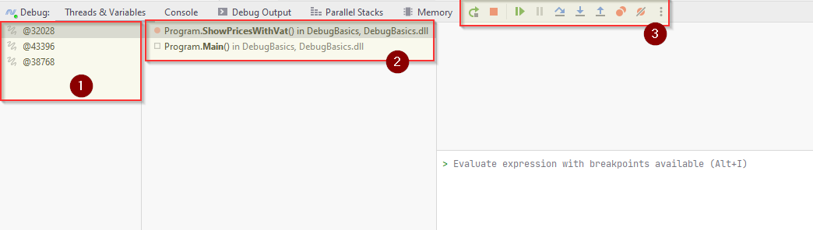
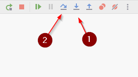
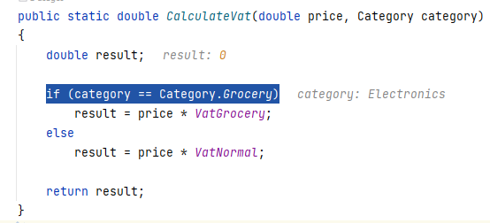

- 1 Introduction
- 2 New project
- 3 Utils class
- 4 Category enum
- 5 Product class
- 6 Program class
- 7 Your first breakpoint
- 8 The debug window
- 9 Advancing execution
- 10 Stepping over code
- 11 Stepping into code
- 12 Resuming the program
- 13 Evaluating expressions
- 14 Adding watches
- 15 End note
Welcome to debugging in C# with Rider
This tutorial will introduce the debugging tool in Rider. The tutorial can be used for other IDEs as well, though some descriptions or images will not match, e.g. Visual Studio.
Still, the same code can be used, and the same debugging functionality will most likely exist.
The code
The code introduced over the next few slides is what we will use for this example. There are four classes:
- Category
- Product
- Program
- Utils
The application is about products and calculating prices, nothing too fancy.
New project
First, you'll need a new console project. It can be in an existing solution, or a new one.
Create Utils class
Inside your new project, create a class called Utils, it looks like this:
public class Utils
{
private const double VatGrocery = 0.07;
private const double VatNormal = 0.19;
public static double CalculateVat(double price, Category category)
{
double result;
if (category == Category.Grocery)
result = price * VatGrocery;
else
result = price * VatNormal;
return result;
}
public static double CalculatePriceWithVat(double price, Category category)
{
var priceVat = price + CalculateVat(price, category);
return priceVat;
}
}
It is not currently important what the code does, we will step through it and investigate, when we start the debugging.
The class depends on a Category, so we will create that next.
Create Category
Next up, we need an enum, called Category:
public enum Category
{
Electronics,
Grocery,
Clothes
}
When creating a new class, there is actually an option to make it an enum right away:

Alterntively, just create a normal class, and change out class with enum.
Product class
Now we need the product class:
public class Product
{
public string Name { get; set; }
public Category Category { get; set; }
public double Price { get; set; }
public Product(string name, Category category, double price)
{
Name = name;
Category = category;
Price = price;
}
}
Program class
Finally, we need to update the Program.cs.
When you created a console application, the Program.cs will have been created for you.
You just need to modify it to look like this:
namespace PutYourNameSpaceHere;
public class Program
{
public static void Main(string[] args)
{
ShowPricesWithVat();
}
private static void ShowPricesWithVat()
{
Console.WriteLine("Product prices incl. VAT:");
foreach (var product in Products)
{
var vat = Utils.CalculateVat(product.Price, product.Category);
var priceWithVat = Math.Round(product.Price + vat, 2);
Console.WriteLine($"{product.Name}: {priceWithVat} EUR");
}
}
private static readonly IEnumerable<Product> Products = new List<Product>
{
new Product("Batteries", Category.Electronics, 2.50),
new Product("SD Card", Category.Electronics, 10),
new Product("T-shirt", Category.Electronics, 15),
new Product("Parmesan Cheese", Category.Grocery, 7.50),
new Product("Tomatoes", Category.Grocery, 2),
};
}
You will have to fix the namespace, I just added a dummy name. The previously created classes would by default get a namespace corresponding to the Project name, e.g. "DebugBasics".
Fix any import mistakes.
Your program should now compile.
If you run it, you should get the below output in the console:
Product prices incl. VAT:
Batteries: 2.98 EUR
SD Card: 11.9 EUR
T-shirt: 17.85 EUR
Parmesan Cheese: 8.02 EUR
Tomatoes: 2.14 EUR
The project looks like this:

Setting a breakpoint
Breakpoints are placed next to lines of code. When running your program in debug mode (shown later), your program will pause execution at the break point, and you can inspect all kinds of information.
A breakpoint is placed in the gutter.
Now, suppose we don't like the numbers and want to understand how the calculations are made by debugging our program.
In our program, all calculation results are shown by the ShowPricesWithVat method, so, let's put a breakpoint on the first line of this method, and run the program in debug mode, like so:

Let your program be paused here, and continue to the next slide.
The Debug Window
After we start debugging, the program stops at the breakpoint. To examine the state of the paused program, we use the Debug window.
This window contains all kinds of information:

- Here we see the active threads. The current threads is selected
@32028. You usually don't need to care about this part. - Here we see the call stack, these are the methods called in order to reach the breakpoint. On my stack there are only two methods. First
Main()was called, and from that we calledShowPricesWithVat().- You can click on the
Main()in the stack, and the debugger will take you to that place, and show you information. You will see in the window below (3) that theargsvariable of theMain()method is shown. The variable is empty. - Click back on
ShowPricesWithWat()in (2)
- You can click on the
- These are your buttons to navigate execution of your code. We will come back to these.
Advancing execution
During debugging we step through the program to examine the program state at various execution points. There are two main ways you can step through code:
Step Into[F7]: if a line of code runs a function, you will step inside it and stop at the beginning of this function.Step Over[F8]: if you're not interested in the function, debugger will execute the call and stop at the next statement.

We'll take a look at both.
Stepping over code
Your program should still be paused at the Console.WriteLine(). Otherwise stop execution, and restart with the debugging button.
Let's begin with stepping over the Utils.CalculateVat function in the foreach-loop:
Notice how the information below changes for each step, as more/different information is available.
When the program is paused again at the Console.WriteLine() inside the for-loop, the current information is this:

We can see that the variable priceWithVat has the value 2.98.
We can inspect the product variable, by clicking the little expand arrow, and see that:
- The
Categoryof the product isElectronics - The
Nameis Batteries - The
Priceis 2.5
You should also note that values and information are shown, not only in the debugging window, but also directly in your code:

Stepping Into Code
Press the step over button [F8] a few times, until the exeuction point reaches the line with var vat = Utils.CalculateVat(...
Now, we want to step into, which means we enter the method CalculateVat, and continue from there.
Press the step into button or [F7].
That should take your execution to the first line of CalculateVat, line 9 here:

Press the step over button a number of times until you exit the method again. Inspect the values in the debug window along the way.
Resuming the program
At any time, you can resume program execution. The program will run till the next breakpoint, if any.
E.g. if you have a loop with several lines of code, and your are looking for something specific after a couple of iterations, maybe you don't want to use step-over all the way. Put a break point at the beginning, and use resume to iterate through loops.
Let's create a breakpoint inside the Utils.CalculateVat() and check how it works:
Add a break point here in Utils.cs:
Your program should currently be paused in the for-loop in Program.cs. Press the resume-program button:

The program will resume execution and then stop at our newly created breakpoint.
Evaluating expressions
During debugging, you can evaluate any expression in the context of the current execution point.
Say, we want to evaluate the insides of our if block:

We can select part sof the code and use the Evaluate Expression feature to execute that piece of code, like this:

Alternatively, you can often hold down [alt] key, and left click on expressions, methods, or other, to evaluate it.
Note that you can evaluate just about any arbitrary expression. The only requirement is the variables you use exist in the current context.
Adding watches
f you're interested in how a particular expression changes during program execution,
you can add it to Watches.
By default, watches are shown together with local variables and updated at each step through the application.
Let's add our expression to Watches:
- Select the expression category == Category.Grocery.
- In the context menu (right click), select Add to Watches. Or create a watch manually, see below.
- Press [F9] or click the Resume Program button in the Debug window.
- Note how the watched value changes.
The end
That was the introduction to debugging. This is a common tool available in all modern IDEs, across most programming languages.
Whenever your code does not behave as expected, you should probably start debugging. Put break points before the affected area, and step through the code, inspecting values along the way, until you find something specific.
You will probably often encounter null-pointer exceptions when doing exercises and projects. The exception stack trace should tell you which line of code in which class produce the exception. Put a breakpoint at that line or a few lines before, to inspect what happens up to the expcetion.
Debugging is a powerful tool, and an entire skillset in itself. Mastering this tool is very important.